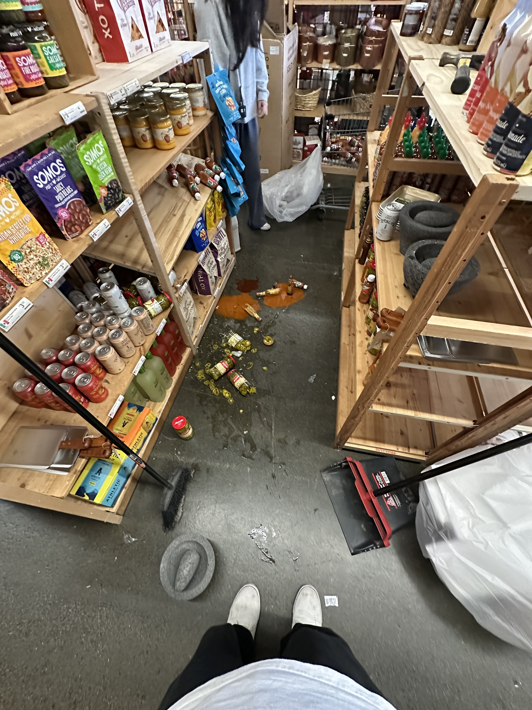
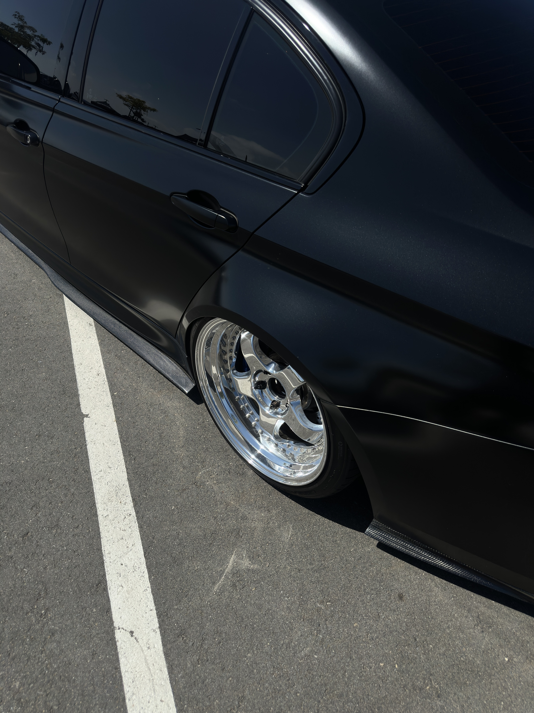
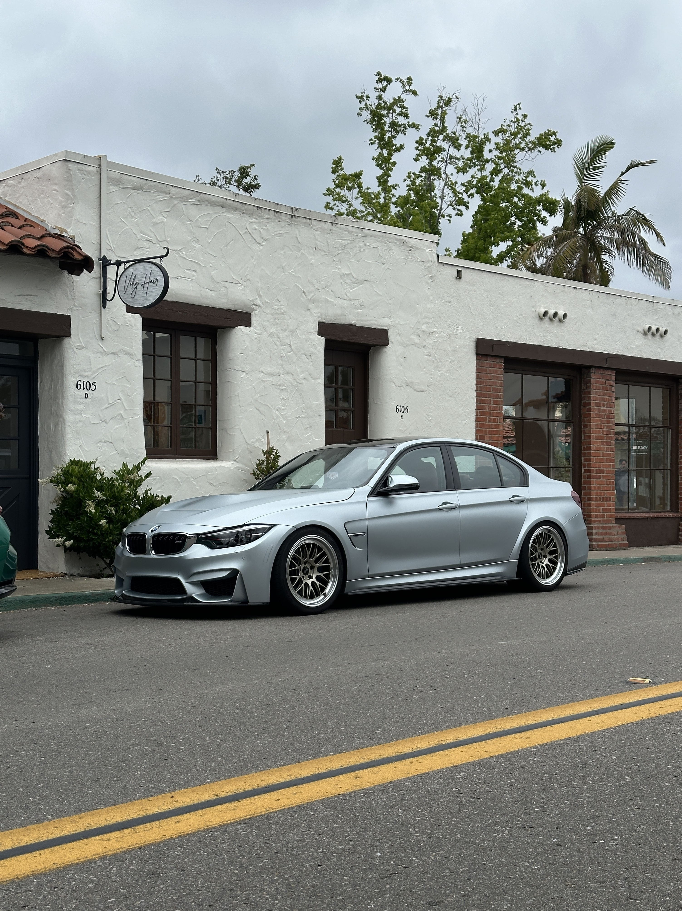

Kayden Le
My name is Kayden Le, and I am currently a student at University of California, Riverside studying business. I have always been interested in learning how businesses operate, how people make financial decisions, and how strong communication and leadership can help organizations grow. Throughout my academic journey, I have developed interests in finance, marketing, law, and entrepreneurship, and I continue to explore these areas both inside and outside of the classroom. I enjoy challenging myself to learn new skills and gain knowledge that will help me succeed in my future career.
One thing that describes me well is that I am motivated to improve myself. Whether it is through school, work, or personal experiences, I try to learn something valuable from every situation. I believe growth comes from discipline, consistency, and being willing to step outside of your comfort zone. As a first-year college student, transitioning into university life has taught me how to become more independent and responsible. Balancing academics, personal responsibilities, and future career goals has helped me become more organized and focused on what I want to accomplish.
Before attending college, I worked at a bike shop, which gave me important real-world experience. Working there taught me how to communicate with customers, solve problems, and work as part of a team. It also helped me understand the importance of patience, professionalism, and strong work ethic. I learned that even small interactions with people can leave a lasting impression, and that customer service plays a major role in any successful business. That experience helped shape my interest in business and showed me how businesses function on a daily basis.
In addition to business, I also have an interest in technology and programming. I have worked on coding projects involving Java and problem-solving, which taught me how to think logically and pay attention to detail. I enjoy learning skills that challenge me mentally because they help me become more adaptable and confident. I believe that combining business knowledge with technology skills will open many opportunities for me in the future.
Family is also very important to me and plays a major role in motivating me to work hard. I value loyalty, respect, and perseverance, and I try to apply those values to everything I do. I want to build a successful future not only for myself but also for the people around me. My long-term goal is to build a stable and successful career in business where I can continue learning, growing, and making meaningful contributions.
Overall, I would describe myself as hardworking, curious, and goal-oriented. I enjoy meeting new people, learning from different experiences, and pushing myself to improve every day. Although I still have much to learn, I am excited about the future and the opportunities ahead of me. I believe that with dedication, resilience, and the right mindset, I can continue to grow both personally and professionally while working toward a successful future.
Experience
Stock Clerk
• Managed inventory for 500+ products by monitoring stock levels, updating records, and coordinating restocking to ensure accuracy and efficient operations across multiple departments
• Assisted with inventory tracking and resolved stock discrepancies, maintaining high accuracy in daily counts and product placement
• Organized merchandise across 5 departments, improving product accessibility and increasing restocking efficiency
Sales Associate
• Assisted 20–30 customers per shift with product selection and purchases, providing detailed recommendations and improving customer satisfaction
• Handled daily transactions and maintained accurate sales records, providing strong attention to detail and accountability
• Organized and tracked 100+ parts and equipment items, improving inventory efficiency and store operations
Water Polo Coahc
• Coached and mentored 20 student athletes during practices and games, helping improve individual skills, teamwork, and overall team performance over the season
• Managed team organization and performance tracking, reinforcing leadership, accountability, and consistent execution of goals
Education
University of California Riverside
Portfolio






